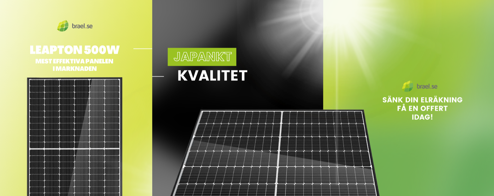
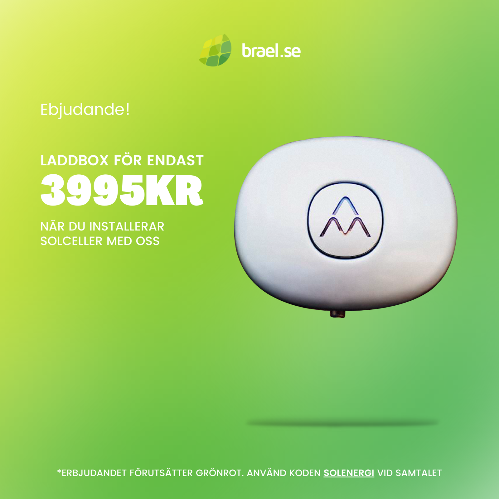

Brael
E-commerce platform redesign focusing on conversion optimization and streamlined checkout flows. Reduced friction and increased sales while maintaining brand identity.

Overview
The platform struggled with low conversion rates and 68% cart abandonment. Users found checkout confusing and product discovery difficult. This redesign simplified the journey from discovery to purchase.
Challenge
High cart abandonment, complex navigation, unclear product information, and poor mobile experience.
Solution
Complete redesign focusing on clarity, trust, and ease of use. Simplified navigation, improved product pages, and streamlined checkout.
User Experience
Homepage & First Impression
Redesigned to communicate value immediately. Clear hero section, social proof, and easy navigation. Added trust signals prominently.
Product Discovery
Improved category navigation with clear hierarchy. Enhanced search with filters and sorting. Added Recently Viewed and recommendations.
Product Pages
High-quality images, clear pricing, detailed descriptions, and reviews. Size guides and shipping info directly on page. Prominent Add to Cart button.
Checkout
Streamlined from 5 steps to 1 page with progress indicator. Guest checkout, saved payment methods, and clear shipping calculator. Reduced abandonment by 35%.

Key Features
Streamlined Checkout
Single-page checkout with progress indicator. Guest checkout and saved payment methods. Clear shipping cost calculator.
Enhanced Product Pages
High-quality images with zoom, size guides, customer reviews, and trust badges. Buy Now option for quick purchases.
Mobile-First Design
Touch-friendly buttons, simplified navigation, and optimized checkout. Mobile conversion increased by 42%.
Trust & Security
Security badges, customer reviews, and clear return policy information throughout the journey.
Outcomes
Results
Significant improvements across all key metrics. Conversion rates increased, cart abandonment decreased, and user satisfaction improved.